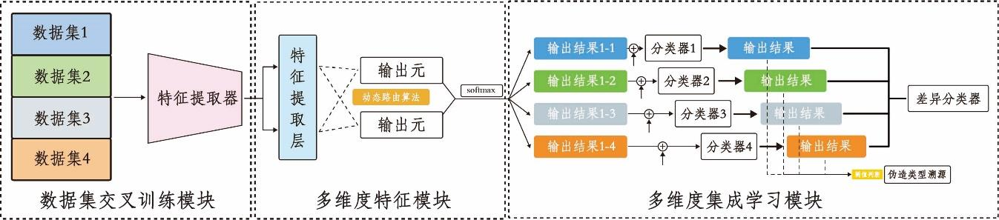
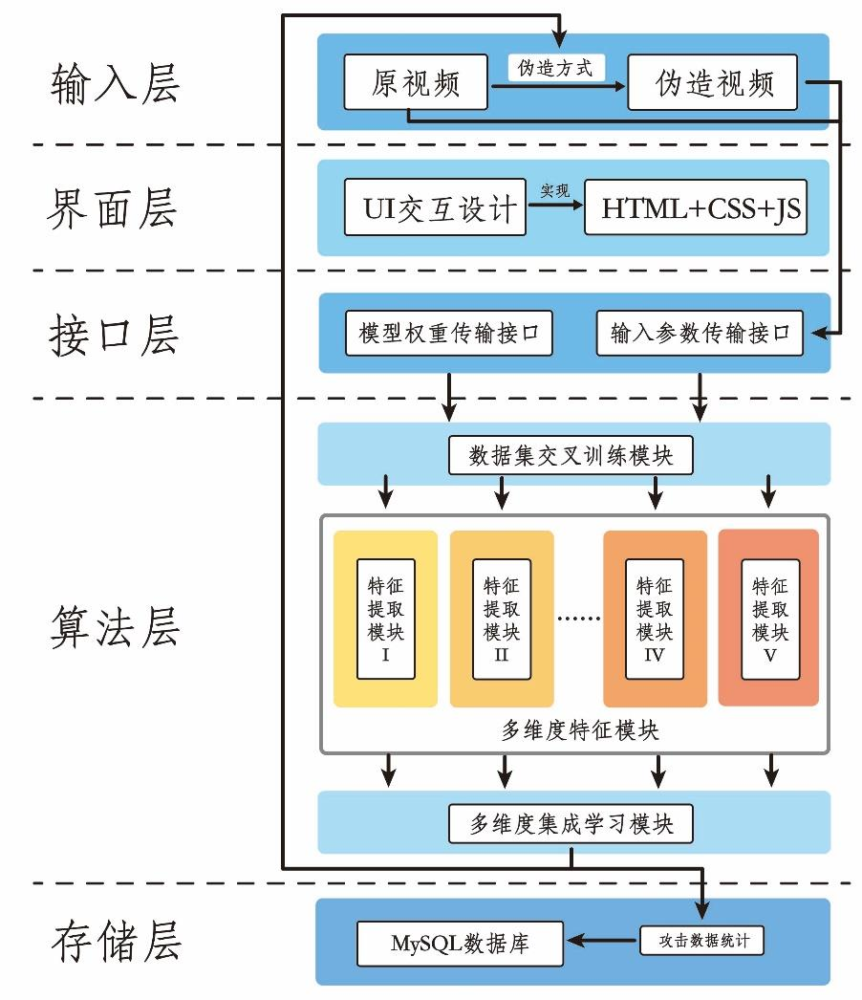
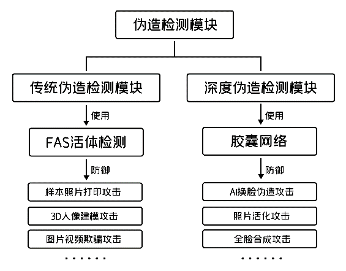

Introduction
The rapid advancement of internet technology has shifted communication from offline to online platforms, necessitating reliable authentication methods to establish trust between individuals, businesses, and institutions. Given the importance of facial features in personal identification, facial recognition technology has become an essential tool for ensuring security in various sectors, including finance, security, and government.
However, despite its growing maturity, current facial recognition technology still faces significant challenges. These challenges include vulnerability to remote, unsupervised spoofing attacks and the rising threat of deepfake technology, which has outpaced human ability to detect fake images. This technology poses risks to personal safety, economic security, and even national security.

- High-Accuracy Detection: The system significantly improves facial detection accuracy, outperforming previous methods while also enhancing detection speed.
- Comprehensive Fraud Prevention: The system is designed to counter a wide range of spoofing techniques, including traditional methods like photo printing and 3D modeling, as well as advanced deepfake attacks.
- Robust System Design: By integrating advanced algorithms such as FaceNet-KD for facial recognition and optimized Capsule Networks for deepfake detection, the system ensures both high accuracy and efficiency.
- User-Friendly Interface: The system includes a user-friendly UI, making it suitable for various applications, including remote authentication and secure transactions.
Detailed Information
The secure facial recognition system presented in this project is designed with several key modules, each playing a crucial role in ensuring robust and accurate performance against various types of facial spoofing attacks. Below, we describe the specific implementation details of these modules.
- Extended Functionality Module: This module includes Human Pose Estimation and Fine-Grained Image Segmentation. The Human Pose Estimation is powered by an Openpose-based algorithm, which helps identify key body points to verify whether the detected person is a live individual. The Image Segmentation utilizes an enhanced U2Net model, which is lightweight yet capable of capturing detailed features, making it suitable for real-time segmentation tasks.
- Face Authentication Module: This module uses the FaceNet-KD model, which is a knowledge-distilled version of the original FaceNet. The distillation process reduces the model's size while retaining high accuracy, making it more efficient for real-time applications. It first performs face segmentation using BlazeNet and then extracts facial features to compare similarity, thereby ensuring robust identification even in varying lighting conditions and backgrounds.
- Forgery Detection Module: This module is divided into two sub-modules: Traditional Forgery Detection and Deepfake Detection. The Traditional Forgery Detection uses the FAS (Face Anti-Spoofing) model to defend against attacks such as printed photos or 3D masks. The Deepfake Detection sub-module employs an optimized Capsule Network that integrates VGG-16p as the feature extractor, followed by dynamic routing algorithms to accurately detect AI-generated fake faces, ensuring high precision and fast processing.
- Extended Functionality Module: This module includes Human Pose Estimation and Fine-Grained Image Segmentation. The Human Pose Estimation is powered by an Openpose-based algorithm, which helps identify key body points to verify whether the detected person is a live individual. The Image Segmentation utilizes an enhanced U2Net model, which is lightweight yet capable of capturing detailed features, making it suitable for real-time segmentation tasks.
- Frontend and Backend Module: The system's frontend offers a user-friendly interface for uploading images or videos and visualizing the results. The backend manages data processing, interfaces with the machine learning models, and returns the authentication results. This module is designed to provide a seamless user experience while ensuring high security and accuracy.



Project Achievements

The project successfully developed a robust facial recognition system capable of withstanding a wide array of spoofing attacks, including those leveraging advanced deepfake technologies. The system was rigorously tested and demonstrated significant improvements in both detection accuracy and processing speed, making it suitable for real-time applications in various scenarios.
- Enhanced Security: The system was able to effectively identify and prevent various types of facial spoofing attacks, including traditional methods such as photo and video-based attacks, as well as more sophisticated deepfake threats. This was achieved by integrating optimized algorithms like FaceNet-KD and Capsule Networks, ensuring high accuracy while maintaining efficiency.
- User-Friendly Interface: The project also focused on creating a user-friendly UI, which allows easy interaction and deployment across multiple platforms. This ensures that the system is not only secure but also accessible for a broad range of applications, from financial transactions to secure authentication in government sectors.
- Scalability and Flexibility: The system's modular design allows for easy adaptation to different use cases, whether it's for secure online payments or ensuring the authenticity of users in remote settings. The combination of traditional spoof detection and deepfake identification makes the system versatile and capable of evolving with emerging threats.
- Real-Time Performance: One of the significant achievements was optimizing the system to perform efficiently in real-time, ensuring that even complex tasks such as deepfake detection could be handled swiftly, without compromising accuracy. This balance between speed and security makes the system highly effective for practical deployment.